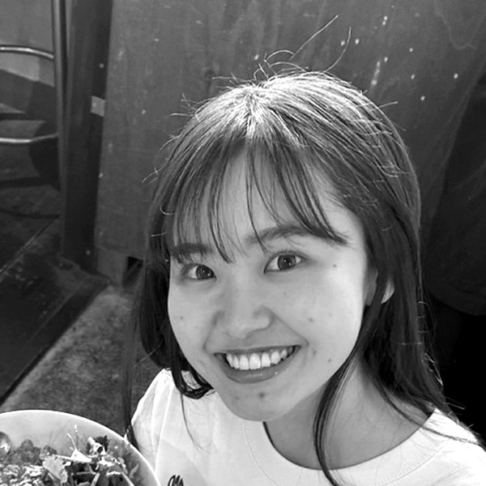

A WEB Director at Rakuten for Rakuten Ichiba WEB.
I own all phases of web direction — from concept and user research through production, launch, and post-launch analysis — across all projects below.
全てのプロジェクトにおいて、企画立案・ユーザー分析からリリース後の効果測定まで、全工程を一気通貫でディレクションしています。
Design Process | デザインプロセス
Thank you for viewing
my portfolio.
ご覧いただき、ありがとうございました。
A Web Director with 3+ years of experience leading end-to-end digital direction at Rakuten Ichiba, one of Japan's largest e-commerce platforms.
I began my career in sales, but was drawn to the power of UX and creative direction to optimize experiences and create value beyond expectations. Through an internal career transition, I became a Web Director — and now collaborate with diverse stakeholders to balance user experience and business growth through a data-driven approach.
楽天グループ株式会社にて、約3年間「楽天市場Webサイト」のディレクターとして、企画立案から効果測定まで、ユーザー体験の創出や改善に従事。
元々は営業職としてキャリアをスタートしたが、人々の体験を豊かにするUXデザインやクリエイティブに強く魅力を感じており、社内公募制度を通じてディレクターへ転身。
現在は、多様なステークホルダーと協働し、データドリブンなアプローチで、ユーザー体験の向上と事業成長の両立を目指している。

Music has been at the heart of my life — from piano lessons as a child, to performing in bands and wind orchestras, to writing my own compositions. Music is something I simply cannot live without. These days, I enjoy going to live shows and collecting records.
I'm also drawn to nature and travel — new landscapes and experiences are a constant source of inspiration for me.
幼い頃からピアノを習い、バンド・吹奏楽・作曲とさまざまな形で音楽に関わり、音楽は私の人生に欠かせない存在です。
今はLIVEに行ったりレコードを集めたりして楽しんでいます。
また、自然や旅も好きで、新しい景色と体験から刺激を得ています。
Led end-to-end web direction for cosmetics, daily goods, and gift services on Rakuten Ichiba. Owned the full PDCA cycle from planning and user research through KPI measurement. Achieved 37% YoY GMV growth and ¥1.3B+ in page-attributed sales.
コスメ・日用品・ギフトサービスなどの楽天市場Webディレクションを担当。企画立案からユーザー分析・制作進行・効果測定まで全工程を一貫して担当。大規模企画では、GMS前年比+37%・13億円超の流通を達成。
Managed B2B sales for base station installation projects. Handled both new and existing clients, leading the full sales cycle from needs assessment to proposal. Also served as team leader, managing team members.
基地局設置に関する法人営業を担当。新規・既存顧客のニーズヒアリングから提案まで顧客折衝を一貫して担当。チームリーダーとしてメンバーのマネジメントも経験。
Evening program in UI/UX and graphic design, studying alongside full-time work.
就業と並行してUI/UXデザインを体系的に学習中。2026年7月卒業予定。
Majored in data analysis and marketing.
データ分析・マーケティングを専攻。